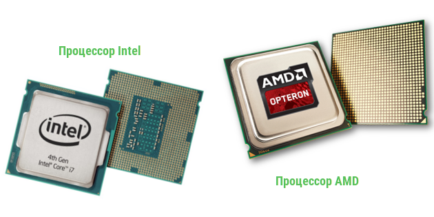
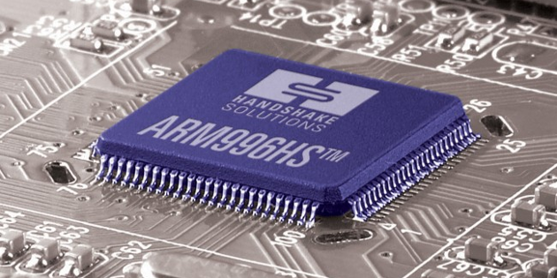
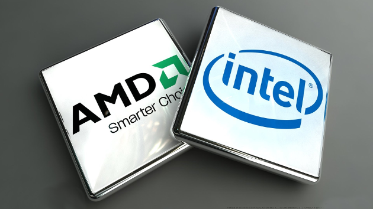

Вся суть в том, что центральный процессор (его полное название) – как говорят, самое настоящее сердце и одновременно мозг компьютера.
Пока он работает, работают и все остальные составляющие системного блока и подключенная к нему периферия.
Он отвечает за обработку потоков различных данных, а также регулирует работу частей системы.
Центральный процессор — электронный блок либо интегральная схема (микропроцессор), исполняющая машинные инструкции (код программ), главная часть аппаратного обеспечения компьютера или программируемого логического контроллера.
В жизни ЦПУ имеет вид небольшой квадратной платы размером со спичечный коробок толщиной в несколько миллиметров, верхняя часть которого как, как правило, прикрыта металлической крышкой (в настольных версиях), а на нижней расположено множество контактов.

Без команды, отданной процессором, не может быть произведена даже такая простая операция, как сложение двух чисел, или запись одного мегабайта информации. Все это требует немедленного обращения к ЦП. Что уж до более сложных задач, таких как запуск игры, или обработка видео.
К словам выше стоит добавить, что процессоры могут выполнять и функции видеокарты. Дело в том, что в современных чипах отведено место для видеоконтроллера, который выполняет все необходимые от нее функции, а как видеопамять использует ОЗУ.
Не стоит думать, что встроенные графические ядра способны конкурировать с видеокартами хотя бы среднего класса, это больше вариант для офисных машин, где мощная графика не нужна, но все же потянуть что-то слабое им по зубам.
Главным же достоинством интегрированной графики является цена – все же отдельную видеокарту покупать не нужно, а это существенная экономия.

Деятельность ЦП можно представить последовательностью следующих событий:
Из ОЗУ, куда загрузилась определенная программа (допустим текстовый редактор), управляющий блок процессора извлекает необходимые сведения, а также набор команд, которые обязательно нужно выполнить. Все это отправляется в буферную память (кэш) ЦП
Выходящая из кэш-памяти информация разделяется на два вида: инструкции и значения, которые отправляются в регистры (это такие ячейки памяти в процессоре). Первые идут в регистры команд, а вторые в регистры данных
Информацию из регистров обрабатывает арифметико-логическое устройство (часть ЦПУ, которая выполняет арифметические и логические преобразования поступающих данных), которое из них считывает информацию, а за тем исполняет необходимые команды над получившимися в итоге числами
Получившиеся результаты, разделяющиеся на законченные и незаконченные, идут в регистры, откуда первая группа отправляется в кэш-память ЦП
Этот пункт начнем с того, что есть два основных уровня кэша: верхний и нижний. Последние полученные команды и данные, нужные для выполнения расчетов, поступают в кэш верхнего уровня, а неиспользуемые отправляются в кэш нижнего уровня.
Этот процесс идёт следующим образом – вся информация идёт с третьего уровня кэша на второй, а потом попадает на первый, с не нужными на текущий момент данными и их отправкой на нижний уровень все обстоит наоборот
По окончанию вычислительного цикла, конечный итог будет записан в оперативной памяти системы, для освобождения места кэш-памяти ЦП для новых операций.
Но может произойти так, что буферная память будет переполнена, тогда неэксплуатируемые данные пойдут в оперативную память, или на нижний уровень кэша
Поэтапные шаги вышеприведенных действий являются операционным потоком процессора и ответом на вопрос – как работает процессор.

Существует множество видов процессоров от слабых одноядерных, до мощных многоядерных. От игровых и рабочих до средних по всем параметрам.
Но, есть два основных лагеря ЦП – AMD и знаменитые Intel. Это две компании, производящие самые востребованные и популярные микропроцессоры на рынке.
Основное различие между продукцией AMD и Intel – не количество ядер, а архитектура – внутреннее строение.
Каждый из конкурентов предлагает свое строение «внутренностей», свой вид процессора, кардинально отличающуюся от конкурента.
У продуктов каждой из сторон есть свои плюсы и минусы, предлагаю кратко ознакомиться с ними поближе.
Обладает более низким потреблением энергии
Разработчики больше ориентируются на Интел, чем на АМД
Лучше производительность в играх
Связь процессоров Интел с ОЗУ реализована лучше, нежели у АМД
Операции, осуществляемые в рамках только одной программы (на пример разархивирование) идут лучше, АМД в этом плане поигрывает
Минусы процессоров Intel:
Самый большой минус – цена. ЦП от данного производителя зачастую на порядок выше чем у их главного конкурента
Производительность снижается при использовании двух и более «тяжелых» программ
Интегрированные графические ядра уступают АМД
Самый большой плюс – самый большой минус Intel – цена. Вы можете купить хороший середнячок от AMD, который будет на твердую 4, а может даже и 5 тянуть современные игры, при этом стоить он будет намного ниже чем аналогичный по производительности процессор от конкурента
Адекватное соотношение качества и цены
Обеспечивают качественную работу системы
Возможность разгона процессора, повышая тем самым его мощность на 10-20%
Интегрированные графические ядра превосходят Интел
Процессоры от АМД хуже взаимодействуют с ОЗУ
Энергопотребление больше, чем у Интел
Работа буферной памяти на втором и третьем уровне идёт на более низкой частоте
Производительность в играх отстает от показателей конкурента
Но, несмотря на приведенные достоинства и недостатки, каждая из компаний продолжает развиваться, их процессоры с каждым поколением становятся мощнее, а ошибки предыдущей линейки учитываются и исправляются.
Мы рассмотрели, что такое процессор компьютера, как он работает. Ознакомились с тем, что из себя представляют два основных их вида, время обратить внимание на их характеристики.
Итак, для начала их перечислим: бренд, серия, архитектура, поддержка определенного сокета, тактовая частота процессора, кэш, количество ядер, энергопотребление и тепловыделение, интегрированная графика. Теперь разберем с пояснениями:
Бренд – кто производит процессор: AMD, или Intel. От данного выбора зависит не только цена приобретения, и производительность, как можно было бы предположить из предыдущего раздела, но также и выбор остальных комплектующих ПК, в частности, материнской платы.
Поскольку процессоры от АМД и Интел имеют различную конструкцию и архитектуру, то в сокет (гнездо для установки процессора на материнской плате) предназначенный под один тип процессора, нельзя будет установить второй
Серия – оба конкурента делят свою продукцию на множество видов и подвидов. (AMD – Ryzen, FX. Intel- i5, i7)
Архитектура процессора – фактически внутренние органы ЦП, каждый вид процессоров имеет индивидуальную архитектуру.
В свою очередь один вид можно разделить на несколько подвидов
Поддержка определенного сокета — очень важная характеристика процессора, поскольку сам сокет является «гнездом» на материнской плате для подсоединения процессора, а каждый вид процессоров требует соответствующий ему разъем. Собственно об этом было сказано выше.
Вам либо нужно точно знать какой сокет расположен на вашей материнской плате и под нее подбирать процессор, либо наоборот (что более правильно)
Тактовая частота – один из значимых показателей производительности ЦП. Давайте ответим на вопрос что такое тактовая частота процессора. Ответ будет простым для этого грозного термина – объем операций выполняющихся в единицу времени, измеряющийся в мегагерцах (МГц)
Кэш — установленная прямо в процессор память, её ещё называют буферной памятью, имеет два уровня – верхний и нижний. Первый получает активную информацию, второй – неиспользуемую на данный момент.
Процесс получения информации идет с третьего уровня во второй, а потом в первый, ненужная информация проделывает обратный путь
Количество ядер — в ЦП их может быть от одного до нескольких. В зависимости от количества процессор будет называться двухъядерных, четырех ядерным и т.д. Соответственно от их числа будет зависеть мощность
Энергопотребление и тепловыделение. Тут все просто – чем выше процессор «съедает» энергии, тем больше тепла он выделит, обращайте внимание на этот пункт, чтобы выбрать соответствующий кулер охлаждения и блок питания
Интегрированная графика – у AMD первые такие разработки появились в 2006, у Intel с 2010. Первые показывают больший результат, чем конкуренты. Но все равно, до флагманских видеокарт пока ни один из них не смог дотянуть
Как вы уже поняли центральный процессор компьютера играет важнейшую роль в системе. На этой странице мы с вами разобрали, что такое процессор компьютера, что такое частота процессора, какие они бывают и для чего нужны.
Как сильно одни ЦП отличаются от других, какие виды процессоров бывают.
Поговорили о плюсах и минусах продукции двух конкурирующих между собой кампаний.
Но с какой характеристикой процессор будет стоять в вашем системном блоке решать только вам.